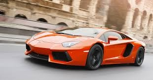

The Lamborghini Aventador, launched in 2011, is a supercar that quickly became a flagship model for the Italian automaker. Known for its aggressive, angular design and its powerful performance, the Aventador embodies Lamborghini’s commitment to bold styling and high performance. Its mid-mounted 6.5-liter V12 engine delivers an incredible 700+ horsepower, making it one of the fastest production cars of its time, with a 0-60 mph acceleration in under 3 seconds. The Aventador also features Lamborghini’s signature scissor doors, a design element that has been synonymous with the brand’s supercars for decades. The car’s advanced all-wheel-drive system and lightweight carbon fiber-reinforced polymer monocoque contribute to its superb handling and speed, giving drivers an unforgettable experience on both road and track.
Beyond its performance, the Aventador stands out for its cutting-edge technology and luxurious interior. It incorporates Lamborghini’s dynamic suspension systems and customizable driving modes, allowing drivers to optimize settings for track or everyday use. Inside, the Aventador offers a cockpit-like experience, with digital displays and premium materials that reflect Lamborghini’s commitment to craftsmanship. Over its production life, Lamborghini released multiple special editions and variants of the Aventador, including the Aventador S, SVJ, and the Aventador Ultimae, each showcasing improvements in aerodynamics, power, and exclusive features. The Aventador’s bold design, powerful V12 engine, and status as a true Italian supercar have solidified its place as an icon in the automotive world, marking the end of an era as Lamborghini’s last naturally aspirated V12 model before the brand’s transition to hybrid technology.